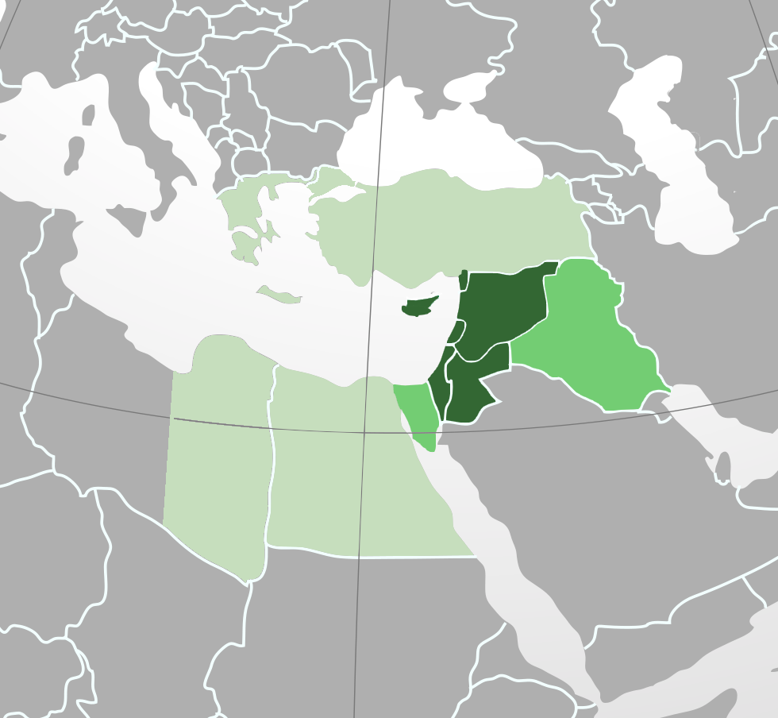
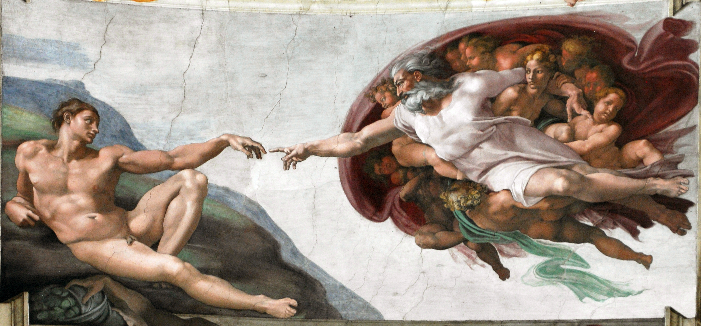

The term "Judeo-Christian mythology" refers to the body of narratives, beliefs, and legends shared by Judaism and Christianity, centered on the Abrahamic tradition. The foundation of this tradition is Jewish mythology, which includes the Genesis account (the seven-day creation, Adam and Eve, the Flood), the saga of the patriarchs (Abraham, Isaac, and Jacob), and the liberation of the people of Israel from Egypt by Moses. It also encompasses non-canonical traditions and folk legends, such as the famous figure of the Golem of Prague.
Bearing in mind that mythology is not the same as religion, the Christian religion was indeed influenced by Judeo-Christian mythology—as well as by Greco-Roman, Persian, and Egyptian mythologies—but this does not mean that everything venerated in the Christian religion is also found in those mythologies; quite the contrary, given that the foundation of Christian belief is solely the Bible.
Creation of the Universe

The account of creation in Judeo-Christian mythology, detailed in the Book of Genesis, narrates that God created the universe in six days out of nothing (ex nihilo). He made light, the firmament, and the celestial bodies. On the sixth day, He molded Adam from dust and Eve from his rib, resting on the seventh.
Unlike the other mythologies presented, God is Yahweh (YHWH), the sole, monotheistic Creator. In Christian mythology, this same God is expanded into the Trinity: the Father, Jesus Christ (the Son), and the Holy Spirit.
Alliances
In the Judeo-Christian tradition, a covenant (berit in Hebrew) is a solemn and sacred pact that establishes a partnership between God and humanity. The biblical narrative is structured around a progressive series of covenants that seek to restore creation and ensure divine protection and faithfulness.
Noah: established after the flood, it is a universal covenant with all creation in
which God promises never again to destroy the Earth by water, with the rainbow as the sign.
Abraham: God promises to make Abraham the father of a great nation, giving him a land
and descendants. The physical and perpetual sign of this covenant is circumcision.
Mosaic (Moses): established at Mount Sinai, it consists of the giving of the Law (the
Ten Commandments).
David: God promises that David's dynasty and throne will be established forever,
linking the lineage to the concept of the Messiah.
How this reaches us
We all know why this mythology is so influential—especially for those in the West: Christianity is one of the major legacies of colonization. It became the official religion of the Roman Empire in 392 AD, and with the Age of Discovery and subsequent European colonialism starting in the 15th century, this worldview was imposed or assimilated worldwide, shaping laws, morality, and education. Early Christian churches and communities spread across the Middle East, India, and Central Asia. Later, Jesuit missionaries (such as those in Japan and China during the 16th and 17th centuries) introduced the biblical worldview, though with less lasting cultural impact than in Europe and the Americas.
Examples of famous works that use this mythology as a reference are Matrix, Stranger Things, Dragon Ball, The Beauty and the Beast, The Chronicles of Narnia, Harry Potter, etc.